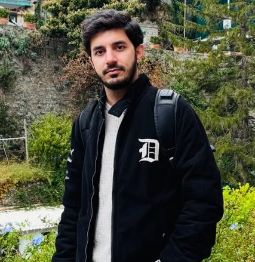
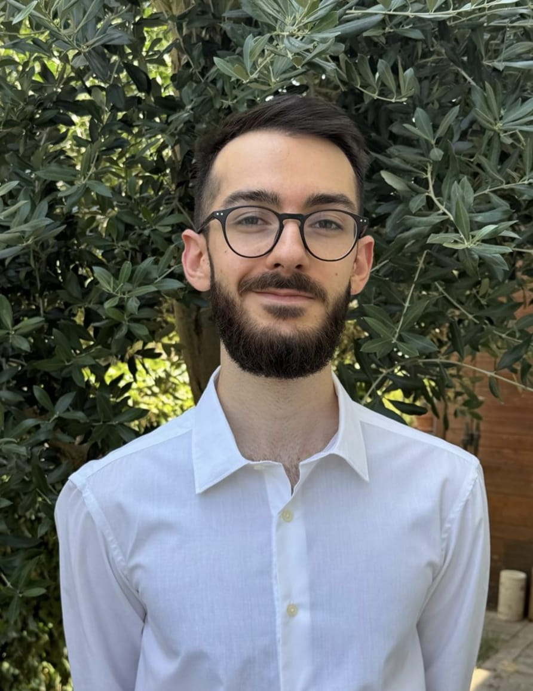

People
Research Supervision
Postdoctoral Researchers
Current PhD Students
Completed PhD Students
Visiting Students


Nicolò Montefiori
Master Thesis Student, University of Bologna
HINTS Project
(Sep 2026 – Jan 2027)
Others
Research Opportunities
I am always interested in collaborating with motivated students, researchers, and industry partners who are passionate about Computer Graphics, Computer Games, Human-Centered Computing, Extended Reality, and Applied Artificial Intelligence.
If you have an exciting research idea, are looking for a collaborator on a project or publication, or would like to explore opportunities for remote research collaboration, feel free to contact me. I am always happy to discuss new ideas and potential collaborations. Feel free to contact me at prashant.goswami@bth.se to discuss potential collaborations.
Hosted / Invited Researchers
- Dr. Romain Vergne — INRIA Grenoble (September 2017)
- Dr. Shubhajit Roy Chowdhury — IIT Mandi (June 2022)
- Dr. Ojaswa Sharma — IIIT Delhi (January 2025)
External Research Collaborators
- Santosh Jagtap — IIT Guwahati, India
- Jaya Sreevalsan Nair — IIIT Bangalore, India
- Michael Doggett — Lund University, Sweden
- Enrico Gobbetti — CRS4, Italy
- Christoffer Batty — University of Waterloo, Canada
- Yanci Zhang — Sichuan University, China
Supervised Master & Civilingenjör Theses
Ongoing Supervision (2)
- Sohan Arun (2026) IKEA In Progress
- Alex Olsson & Haissam Mourad (2026) In Progress
Completed Theses (43)
- Karl Fahlstedt (2026) Ericsson — Evaluating QUIC-based Downstream Transport Strategies for Low-Latency Game Streaming under Network Impairments PDF
- Rasmus Petersson & Pontus Östryd (2025) — Tetrahedron-Based XPBD Collision and Performance Analysis for Real-Time Soft Body Deformation PDF
- Nicolas Elvstål Ångnell (2025) — Real-time Simulation of 2D Cable Joints with Pinched and Sliding Joints using Velocity Constraints PDF
- Elliot Lundin & Felix Matthiasson (2024) — GIPP: GPU-based Path Planning and Navigation Mesh Generation: A Novel Automatic Navigation Mesh Generator and Path Planning Algorithm using the Rendering Pipeline PDF
- Herman Larsson (2024) Epiroc — Accelerated LiDAR and RADAR Sensor Simulation for Autonomous Vehicles in Mining Environments PDF
- Lakshmi Sowmya Mamillapalli (2024) Volvo — Real-Time Inspection and Customer Support: A Digital Twin Solution for Construction and Mining Equipment PDF
- Sai Swaroop Rachakonda (2024) Ericsson — Automatic Semantic Segmentation of Indoor Datasets PDF
- Venkata Vamsi Challa (2024) Ericsson — Mutual Enhancement of Environment Recognition and Semantic Segmentation in Indoor Environment PDF
- Abhinav Chitta (2024) Ericsson — Replacing Objects in Point Cloud Stream with Real-Time Meshes using Semantic Segmentation PDF
- Anthony Kommareddy (2023) Ericsson — System Integration and Verification Verdict Automation using Machine Learning PDF
- Nadhif Ginola (2023) AMD — Evaluating Direct3D 12 GPU Resource Synchronization on Performance and Cache Operations PDF
- Simon Andreasson & Linus Östergaard (2023) — Applying spatially and temporally adaptive techniques for faster DEM-based snow simulation PDF
- Devi Priya Battina & Simron Padhi (2023) Ericsson — Automating Root Cause Analysis of Anomalies in Ericsson Wallet Platform using Machine Learning PDF
- Henrik Johansson (2022) — Generating lightning bolt videos perceived as real in Images using machine learning PDF
- Varun Goud Maragoni (2022) Massive Entertainment — Player Activity Sequence Analysis Using Process Mining PDF
- Anton Åsbrink & Jacob Andersson (2022) Macaroni Studios — Game-Agnostic Asset Loading Order Using Static Code Analysis PDF
- Linus Rosenholm (2021) — Autonomous and semi-autonomous self-driving cars in Sweden: Ethical considerations PDF
- Sai Ajith Teki (2021) — Optimal Optimizer Hyper-Parameters for 2D to 3D Reconstruction PDF
- Theo Berlin Holmqvist (2021) — Asynchronous Divergence-Free Smoothed Particle Hydrodynamics PDF
- Jonathan Åleskog & Daniel Cheh (2021) — Slab and Powder-Snow avalanche animation on the GPU PDF
- Adrian Nordin & Simon Nylén (2021) — Real-time Snow Simulator using Iterative-relaxation and Boundary Handling PDF
- Fredrik Lind & Andrés Diaz Escalante (2021) — Maximizing performance gain of Variable Rate Shading tier 2 while maintaining image quality: Using post processing effects to mask image degradation PDF
- Herman Hansson Söderlund (2021) NVIDIA — Hardware-Accelerated Ray Tracing of Implicit Surfaces: A study of real-time editing and rendering of implicit surfaces PDF
- Mattias Fredriksson (2020) — Tree structured neural network hierarchy for synthesizing throwing motion PDF
- Dan Printzell (2020) Mutate AB — Global Illumination for Dynamic Voxel Worlds using Surfels and Light Probes PDF
- Fredrik Junede & Samuel Asp (2020) — Real-time 3D cloud animations using DCGAN PDF
- Viktor Enfeldt (2020) — Real-Time Ray Tracing With Polarization Parameters PDF
- Kim Enarsson (2020) — Particle Simulation using Asynchronous Compute: A Study of The Hardware PDF
- Filip Lundbeck (2020) Avalanche Studios — Analysing Variable Rate Shading’s Image-Based Shading in Deferred Lighting Composition PDF
- Mikael Johnson & Simon Gummesson (2019) — Parallel Construction of Local Clearance Triangulations PDF
- Fritjof Cavallin & Timmie Petersson (2019) — Real-time View-dependent Triangulation of Infinite Ray Cast Terrain PDF
- Sai Vijay Pola (2019) Co-supervised — Evaluating the User Experience of Microsoft HoloLens and Mobile Device Using an Augmented Reality Application PDF
- Advaith Putta (2019) Co-supervised — Implementation of Augmented Reality Applications to Recognize Automotive Vehicle Using Microsoft HoloLens PDF
- Albin Berhardsson & Ivar Bjöling (2018) Co-supervised — Generation and Evaluation of Collision Geometry Based on Drawings PDF
- Fuliang Wang & Kaiyuan Yang (2017) Co-supervised with Josef Ström Bartunek — The Implementation of a Fingerprint Enhancement System Based on GPU via CUDA PDF
- Christian Markowicz & Ali Hassan (2017) — Real-time Snow Simulation with Compression and Thermodynamics PDF
- Eric Ahlström & Lucas Holmqvist (2017) — Comparing Traditional Key Frame Animation Approach and Hybrid Animation Approach of Humanoid Characters PDF
- Marcus Svensson (2016) Avalanche Studios — Occlusion Culling on the GPU: Inner Conservative Occluder Rasterization PDF
- Jimmy Gustafsson (2016) — Evolving Neuromodulatory Topologies for Plasticity in Video Game Playing PDF
- Rasmus Tilljander & Joel Begnert (2015) — Combining Regional Time Stepping With Two-Scale PCISPH Method PDF
- Emil Bertilsson (2015) — Dynamic Creation of Multi-resolution Triangulated Irregular Network PDF
- Mattias Fridh Kastrati (2015) BTH — Hybrid Ray-Traced Reflections in Real-Time: in OpenGL 4.3 PDF
- Markus Tillman (2015) BTH — Complex Transformative Portal Interaction PDF
- André Eliasson & Pontus Franzén (2015) BTH — Accelerating IISPH: A Parallel GPGPU Solution Using CUDA PDF
- Iman Bellouki (2014) INRIA Grenoble — Optical Effects with GigaVoxels (Co-supervised with Pascal Guehl)
- Niu Junpeng (2012–2013) NTU Singapore — Parallel Astro Visualizer with Equalizer (Engineering Project)
- Rahul Mukhi (2010–2011) University of Zürich — Point Based Simplification Methods
Supervised Bachelor's Theses
Ongoing Supervision (2)
Completed Theses (43)
- Nikhil Souri Yalamati & Sai Harshitha Adari (2026) Co-supervised with Rajkumar Saini (Luleå University of Technology) — SHARP: Semantic Hopfield Associative Retrieval Processor: Reconstructing Visual Perception from EEG Using Semantic Hopfield Associative Retrieval PDF
- Bhagya Harini Padavala & Sri Harshita Velugubantla (2026) Co-supervised with Amir Yavariabdi — Procedural Terrain-Based Cloud Generation: Dataset Creation and Computational Analysis PDF
- Swaroop Raparthi & Yasoda Kishore Allu (2026) HealthyGaming — Impact of Interactive 3D Avatars for CBT-Inspired Behavioral Support to Players in Digital Games PDF
- Vidya Sinha & Venkata Balaji Anupoju (2026) VERA Energy AB — Design and Evaluation of an AI-Driven Digital Twin Platform for Battery Energy Storage System Assembly PDF
- Tarun Boddeda (2026) Co-supervised with Sadi Alawadi — Federated Learning–Based Player Personalization in Real-Time Strategy Games: Player Action Prediction in StarCraft II PDF
- Chandra Venkata Sai Sarika & Murli Mohan Sarika (2026) Co-supervised with Jaya Sreevalsan-Nair (IIIT Bangalore) — Automatic Refinement of 3D Building Models from LOD1.3 to LOD2.2 PDF
- Rochana Priya Parupalli & Devi SriRam Petta (2025) Co-supervised with Amir Yavariabdi — Synthetic Cloud and Shadow Generation for Segmentation of Cloud and Shadow Regions Using a U-Net Deep Learning Model PDF
- Abhilash Chinnamsetti & Rakesh Reddy Karri (2025) Co-supervised with Amir Yavariabdi — Synthetic Cloud and Shadow Generation for Deep Learning-Based Removal from Optical Satellite Images PDF
- Raghu Vamsi Vajjhula & Satish Kumar Buravelli (2025) Co-supervised with Sadi Alawadi — Balancing Privacy and Performance: Analyzing Accuracy Trade-offs in Federated Learning PDF
- Surya Pothuri & Lakhan Kumar Sundur Purushotham (2025) Co-supervised with Santosh Jagtap (IIT Guwahati) & Jayant Karve (RCupe Pvt. Ltd., Bangalore) Award Winner — Identifying Abnormalities in Heart Sound Data Using Machine Learning PDF Award
- Aiyatham Prabakar Rishi Kiran (2024) — WebAssembly Performance Analysis: A Comparative Study of C++ and Rust Implementations PDF
- Naga Pujitha Pitta & Joshna Sindhuja Pitta (2024) — A Comparative Analysis of RIPPER and CN2 Algorithms in Personal Loan Credit Scoring PDF
- Dhanush Kumar Majji & Tharun Kumar Marada (2024) — Enhancing E-Commerce with Machine Learning for Personalized Gift Segmentation and Recommendations PDF
- Santosh Birada (2024) — Few-Shot Learning for Animal Identification: Enhancing Prototypical Networks with Convolutional Neural Networks PDF
- Raahitya Botta & Aditya Aditya (2023) — Comparison and Performance Analysis of Deep Learning Techniques for Pedestrian Detection in Self-Driving Vehicles PDF
- Mahidhar Reddy Vaka & Vaishnavi Walajapet Bhakthavathsalam (2023) — Designing and Evaluating the Impact of Gamification in E-Learning Platforms for Non-Swedish People Learning Swedish PDF
- Samanth Malepati & Srilekha Pothuganti (2023) — Comparative Analysis of Load Balancing in Cloud Platforms for an Online Bookstore Web Application Using Apache Benchmark PDF
- Prashuna Sai Surya Vishwitha Domadula & Sai Sumanwita Sayyaparaju (2023) — Sentiment Analysis of IMDB Movie Reviews: A Comparative Study of Lexicon-Based Approach and BERT Neural Network Model PDF
- Narendra Velpula & Dinesh Kotti (2023) — IoT-Based Saline Volume Monitoring and Alert System PDF
- Banoday Shiridinadh Reddy Panguru & Hemendranath Chowdary Madhineni (2023) — Comprehensive Evaluation of Augmented Reality for Visualizing Building Exteriors PDF
- Simon Strand & Karlos Napa Häger (2023) — Particle-Oriented Bounding Box Skeletal Animation in Real-Time Applications PDF
- Klara Andersson & Erik Landen (2023) — The Impact of Foveated Rendering as Used for Head-Mounted Displays in Interactive Video Games PDF
- William Kamnert (2023) — Real-Time Soft Body Simulation Using Extended Position-Based Dynamics and Tetrahedral Deformation PDF
- Obi Reddy Kanchi Reddy Gari & Nithin Krishna Vadde (2023) — Design and Implementation of an AR Application for Road Blueprint Visualization PDF
- Morgan Westerberg & Oliver Olguin Jönsson (2023) — A Comparative Performance Analysis of Fast Fourier Transformation and Gerstner Waves PDF
- Oliver Klingspor (2023) — Phong Grass: A Dynamic LOD Approach to Grass Rendering PDF
- Adam Levin & Joakim Bresche (2022) — Performance Comparison Between Clustered and Cascaded Clustered Shading PDF
- Nikhitha Priyadarsini Seelam & Venkata Siva Sai Kumar Palisetti (2022) — Comparative Research of WhatsApp and Telegram Using Heuristic Principles PDF
- Znana Prasanna Peddinti (2022) — A Comparative Study of Analysis of the Myntra & Ajio E-Business Websites Using a Usability Method for Evaluation PDF
- Alexander Bruce & Jonathan Helsing (2022) — A Scalability and Performance Evaluation of Precomputed Flow Field Maps for Multi-Agent Pathfinding PDF
- Bhavya Yaddula & Alphonsa Mary Alexander Madhavan (2022) — Evaluation of Augmented Reality Technology for the Demonstration of KIA EV6 PDF
- Madhan Mohan Reddy Kodatala & Laxmi Prasanna Perla (2022) — Comparing the Usability of Amazon Prime Video and Netflix Applications Using HCI Principles PDF
- Emil Johansson (2021) — Analyzing Performance for Lighting of Tessellated Grass Using LOD PDF
- Akula Sai Pankaj (2021) — A Critical Evaluation of the SRK STORE App Using the Heuristic Principles of Usability PDF
- Emil Lindholm (2020) — Procedurally Generating an Initial Character State for Interesting Role-Playing Game Experiences PDF
- Alexander Danliden & Steven Cederrand (2020) — Multi Sub-Pass & Multi Render-Target Shading in Vulkan: Performance-Based Comparison in Real Time PDF
- Sebastian Tillgren (2020) — Generating 3D Avalanche Slabs with Voronoi Tessellation in Real Time on the CPU PDF
- Pawan Kumar Sarika (2020) — Comparing LSTM and GRU for Multiclass Sentiment Analysis of Movie Reviews PDF
- Naga Sai Dattu Appaji (2020) — Comparison of Searching Algorithms in AI Against Human Agent in Snake Game PDF
- Suraj Sharma (2019) — Performance Comparison of Java and C++ When Sorting Integers and Writing/Reading Files PDF
- Filip Ahlberg (2019) — Local and Network Ransomware Detection Comparison PDF
- Magnus Nyqvist & Fredrik Olsson (2019) — Automated Generation of Waypoints for Pathfinding in a Static Environment PDF
- Victor Olsson & Viktor Eklund (2019) — CPU Performance Evaluation for 2D Voronoi Tessellation PDF
- Salomon Ljungberg-Fayyazuddin & Christoffer Åleskog (2019) — Comparing Node-Sorting Algorithms for Multi-Goal Pathfinding with Obstacles PDF
- Emil Nordlander (2018) — The Different Emotional Effects of Voice and Text Communication in a Game Environment PDF
- Nils Kåvemark & Stevan Miloradovic (2018) — Particle Systems: A Comparison Between Octree-Based and Screen-Space Particle Collision PDF
- Alexander Ljung & Hannes Knutsson (2018) — Cost-Effective Positioning Based on WiFi Probes: Deriving the Position of a Smartphone Using the Signal Strength of WiFi Probes PDF
- Adam Georgsson & Olof Christensson (2018) — Visualization of Training Data Reported by Football Players PDF
- Dan Printzell (2018) — Testing Scalability of Cloud Gaming for Multiplayer Games PDF
- Petrus Lindblom & Amandus Krantz (2017) — Generating Topic-Based Chatbot Responses PDF
- Adam Fredriksson (2017) — Visual Comparison of Lagrangian and Semi-Lagrangian Fluid Simulation PDF
- Oscar Roosvall (2016) — Procedural Terrain Generation Using Ray Marching PDF
- Albin Hermansson (2016) — View-Dependent Collision Detection and Response Using Octrees PDF
- Alexander Grahn (2016) — An Image and Processing Comparison Study of Antialiasing Methods PDF
- Stefan Holm (2009) University of Zurich — Data Management for Terrain Rendering (University of Zürich) Project